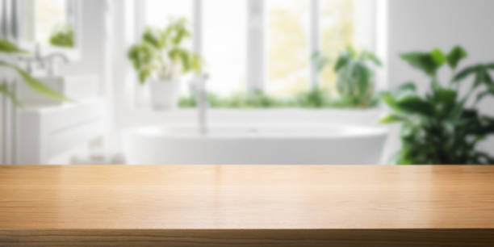

USA - Nationwide
info@ohmykitchen.pro
USA - Nationwide
info@ohmykitchen.pro

Embrace rustic charm with our butcher block countertop installation . Perfect for kitchens and dining areas, these countertops blend style with functionality!
Embrace warmth and functionality with butcher block countertops. Ideal for avid cooks, our professional installation will elevate your kitchen’s charm. Inquire now in Usa - Nationwide!
Residential & commercial Countertops
Quality services at affordable prices
Immediate 24/ 7 emergency services


When it comes to durability and timeless beauty, granite countertops stand unmatched. Granite is a natural stone that not only enhances the aesthetic appeal of your kitchen or bathroom but also ensures longevity and resilience against wear and tear. our granite countertop installation service provides a seamless blend of functionality and style, making it a top choice for homeowners looking to elevate their spaces.
Choosing our services means partnering with experts who have extensive experience in granite countertop installation. Our team understands the nuances of working with natural stone, ensuring precision in every cut and placement. We source high-quality granite slabs from trusted suppliers to guarantee that you receive only the best material for your home. Each installation is customized to fit your unique kitchen or bathroom layout, reflecting your personal style and preferences.
Moreover, our commitment to customer satisfaction ensures that we guide you through the entire process, from selecting the right granite to the final installation. With us, you not only get a beautiful granite countertop but also a reliable and stress-free experience.

Quartz countertops have become synonymous with elegant and functional surfaces in kitchens and bathrooms alike. Combining the beauty of natural stone with engineered reliability, they offer a non-porous, scratch-resistant surface that’s perfect for busy households. Our quartz countertop installation services in Usa - Nationwide ensure you get premium materials and expert craftsmanship tailored to your style.
What makes us the best choice for your quartz needs? We offer a vast array of colors and finishes, allowing you to personalize your space effortlessly. Our team takes pride in their attention to detail, ensuring precise installation that fits perfectly. Furthermore, we provide ongoing support and maintenance tips to keep your quartz countertops looking brand new. Choosing us means choosing quality, durability, and style—your satisfaction is our priority!

The elegance of marble countertops transcends time, making them a luxurious addition to any home. Our marble countertop installation service brings this historic stone's beauty and sophistication directly to your kitchen or bathroom. Marble is synonymous with luxury, offering unique veining and colors that create a stunning focal point in your space.
We understand that installing marble requires precision and expertise. Our dedicated team is trained in the intricacies of marble installation, ensuring a perfect fit and finish in your home. We select only the highest quality marble slabs, providing you with a wide range of choices to suit your style, from classic whites and grays to bold blacks and greens.
We also prioritize customer satisfaction, ensuring that your marble countertop not only meets your expectations but exceeds them. Our team is committed to ensuring a smooth installation process, treating your home with the utmost respect. With our marble countertops, you’ll enjoy a timeless piece that embodies luxury and grace, making your home truly remarkable.

Laminate countertops are an excellent choice for homeowners and businesses looking for stylish yet budget-friendly options. Our laminate countertop installation service in Usa - Nationwide offers an extensive selection of designs and finishes, making it easy to find the perfect match for your needs. Laminate is not only affordable, but it also mimics the look of more expensive materials like granite or marble, giving you stylish options without breaking the bank.
When you choose us for your laminate countertop installation, you can expect professional service and expert guidance throughout the process. Our team understands the importance of quality installation, ensuring that your new countertops are not only beautiful but also durable. We carefully manage every step, from material selection to final installation, to deliver results that exceed your expectations. Choose our laminate countertop services for a perfect balance of style, functionality, and cost-effectiveness.

Solid surface countertops are renowned for their sleek design, ease of maintenance, and versatility. They are a popular choice among homeowners who want a seamless and contemporary look for their kitchens and bathrooms. Our solid surface countertop installation services provide you with a wide range of colors and designs to fit your unique style.
What sets us apart? With our expertise in solid surface materials like Corian and Hi-Macs, we ensure that your installation is seamless and impeccable. Our knowledgeable team will guide you through the customization process, helping you select the best options for your space. Moreover, our commitment to quality workmanship and customer satisfaction means you’ll receive the highest standard of service from start to finish. Let us enhance your home with stylish and durable solid surface countertops!

For homeowners who desire an industrial chic flair, concrete countertops are a fantastic option. They offer an array of finishes, colors, and textures that can be customized to fit any aesthetic. Our concrete countertop installation services allow you to harness the creative potential of concrete, transforming your kitchen or bath into a freestyle design.
Our team of experts specializes in crafting bespoke concrete solutions, ensuring that your countertops not only meet but exceed your expectations. We utilize high-grade materials and innovative techniques to deliver durable and visually appealing results that stand the test of time.
Why choose us for your concrete countertop installation? We are dedicated to client satisfaction through personalized service and quality workmanship. Our skilled artisans understand the nuances of concrete and work meticulously to create a finished product that enhances your space’s uniqueness.

Opt for sustainability without sacrificing style with our recycled glass countertops. Our installation service offers a unique blend of beauty and eco-friendliness. Recycled glass countertops are made from a mix of recycled glass and resin, creating a stunning surface available in many colors and patterns, while contributing positively to the environment.
Choosing our company means choosing an environmentally responsible approach to your countertops. We are committed to providing high-quality craftsmanship and materials that align with your eco-friendly values. Our knowledgeable team will guide you through the selection process, ensuring you select a countertop that reflects your aesthetic while incorporating sustainable practices. Transform your home or business with the beauty and sustainability of recycled glass countertops from Usa - Nationwide.

At the heart of any great kitchen or bathroom is a stunning countertop that reflects your personal style. Our custom countertop design and fabrication services in Usa - Nationwide allow homeowners to transform their dream design into reality. Whether you prefer granite, quartz, marble, or any other material, we help craft countertops that are uniquely yours.
Our process begins with a consultation to understand your vision and requirements. Our design specialists work with you to create unique solutions that blend functionality and aesthetics seamlessly. From concept to reality, our skilled fabricators handle every aspect, ensuring attention to detail and a perfect match to your design.
Choosing us for your custom countertop needs means opting for a dedicated partner in your design journey. Our reputation is built on our commitment to craftsmanship and client satisfaction. We utilize state-of-the-art technology and skilled artisans to deliver products that exceed expectations.

If your countertops are worn out or outdated, our countertop replacement services can give your kitchen or bathroom a fresh new look. Whether you're seeking to upgrade to luxury materials or simply want to rejuvenate the existing design, we can help.
Why choose us for your replacement project? We understand that selecting the right countertops can be overwhelming. Our knowledgeable team will guide you through material options, styles, and budget considerations, ensuring a smooth decision-making process. Our skilled installers will handle everything, from removal of the old countertops to precise installation of your new surfaces, all while minimizing disruption to your home. Trust us to refresh and revitalize your space with our expert countertop replacement services!

Transform your outdoor space into a culinary haven with our outdoor kitchen countertop installation services . Whether you’re entertaining guests or enjoying a family barbecue, having the right countertops can elevate your outdoor cooking experience.
Our team specializes in materials that are suited for outdoor environments, ensuring they withstand the elements while providing style. We offer a variety of options including granite, concrete, and recycled glass that are designed to resist fading, stains, and moisture. Our goal is to create a functional and beautiful outdoor kitchen that you'll love to spend time in.
From the initial design phase to the final installation, we work closely with you to ensure that your outdoor countertops meet your aesthetic and practical needs. We understand that outdoor living spaces require special considerations, and our expertise ensures that you receive a stunning and durable solution.
When you choose our outdoor kitchen countertop services, you receive exceptional craftsmanship combined with premium materials, resulting in a space that is perfect for entertaining and cooking. Enjoy the outdoors and take your cooking to another level with our expertly installed kitchen countertops.

The kitchen island is the heart of any modern kitchen, and it deserves the best countertops. Our kitchen island countertop installation service in Usa - Nationwide focuses on providing aesthetically pleasing, durable, and functional surfaces. From preparing meals to casual dining, we understand that kitchen islands serve multiple purposes, and so should your countertops.
Our experience and knowledge allow us to help you select the right material that not only complements your kitchen's design but also meets your daily functional requirements. We pride ourselves on our craftsmanship, ensuring that each countertop is installed with care and precision. Our team collaborates with you to create a kitchen island that becomes the focal point of your culinary space. Transform your kitchen with our premium kitchen island countertop installation services .

Elevate the aesthetic and functionality of your bathroom with our expert bathroom countertop installation services . Choosing the right countertop can transform your bathroom into a luxurious retreat. From sleek granite and quartz to elegant marble and practical laminate, we offer a wide variety of materials to suit every style and budget.
Our experienced team understands the unique requirements of bathroom spaces, and we are committed to providing custom solutions that fit seamlessly into your design. We will work closely with you from the initial consultation to installation, ensuring the perfect fit and finish.
Not only do we prioritize aesthetics, but we also focus on durability and ease of maintenance. Bathroom countertops must withstand moisture and regular use, and we can recommend materials that meet these needs while also offering a stunning appearance.
From modern to traditional styles, our bathroom countertops can help create a space that reflects your personal taste. Trust us to deliver high-quality materials and impeccable craftsmanship, making your bathroom both functional and beautiful.

The edges of your countertops play a significant role in your kitchen or bathroom's overall look. Our countertop edge design and customization services allow you to add a personal touch to your surfaces, enhancing their unique beauty and character.
We offer a variety of edge profiles, from classic beveled and rounded edges to more contemporary options like waterfall and ogee styles. Our skilled craftsmen can work with a range of materials including granite, quartz, and solid surfaces, ensuring that your chosen edge design aligns perfectly with your overall décor.
Customizing your countertop edges not only enhances aesthetics but can also improve functionality, offering smoother surfaces that are less likely to chip or wear. Our team will assist you in selecting the perfect edge design that complements your style, opens up your space, and matches your countertop material.
When you choose our edge design services, you’ll enjoy both expert guidance and a stunning final product. Transform your countertops into true works of art, reflecting your style and improving your space's overall functionality.

If your countertops are showing signs of wear and tear, countertop resurfacing can breathe new life into them. Our countertop resurfacing service is a cost-effective way to renew the look of your existing surfaces without the need for costly replacements. We specialize in applying high-quality resurfacing materials that can restore the beauty and function of your countertops.
Our team of professionals uses advanced techniques and top-notch materials to ensure that your newly resurfaced countertops not only look great but are also durable and resistant to everyday wear. We offer a wide range of colors and finishes, allowing you to customize your countertops according to your style. With our countertop resurfacing in Usa - Nationwide, you’ll experience a transformation that meets your needs and exceeds your expectations.

Over time, countertops can develop minor damage, such as scratches, chips, or stains that detract from their appearance. Our countertop repair and restoration services address these issues, bringing your surfaces back to life and restoring their beauty and functionality.
Our skilled technicians are trained in a variety of repair techniques tailored to different materials, from solid surface to granite and quartz. We take a comprehensive approach to assessing and addressing any damage, ensuring that repairs are seamless and long-lasting.
Why trust us for your countertop repair needs? We understand the importance of maintaining your investment, and our commitment to quality means that we use the best materials and techniques for all repairs. Our focus on customer service ensures that you are kept informed throughout the process, resulting in a restored surface that meets your expectations.

Proper sealing and maintenance are essential for preserving the beauty and integrity of your stone countertops. Our sealing and maintenance services in Usa - Nationwide are designed to ensure your natural stone surfaces, such as granite or marble, remain stunning for years to come.
We use high-quality sealers that provide effective protection against stains and moisture, helping to maintain your countertops' appearance while extending their lifespan. Our trained technicians apply sealers with precision, ensuring that every inch of your surface is protected.
In addition to sealing, we offer comprehensive maintenance services, including cleaning and polishing that can refresh your countertops’ luster. We believe in educating our customers about the best practices for caring for stone surfaces to ensure they continue to look their best without compromising on performance.
By choosing our sealing and maintenance services, you’re making a smart investment in your home. Protect your countertops with our professional care, ensuring they remain beautiful and functional for years to come.

Elevate your home bar with stunning countertops that impress your guests while providing a durable surface for entertaining. Our countertop services for home bars focus on creating stylish and functional spaces.
Why choose us for your home bar countertops? We specialize in a range of materials—from stone to solid surface to reclaimed wood—allowing you to customize the aesthetic and functionality of your bar. Our design team will work closely with you to ensure that your home bar reflects your personal style while providing practicality and durability. With our expertise, you can create a gathering place that is both inviting and luxurious—trust us to craft the perfect countertops for your home bar!

As sustainability becomes increasingly important in home design, our eco-friendly countertop options cater to environmentally conscious homeowners. We offer a selection of sustainable materials, including recycled glass, bamboo, and reclaimed wood, ensuring that your countertops reflect your values without compromising on style or performance.
Our team is committed to helping you select the best eco-friendly materials that fit your design needs. We believe that you shouldn’t have to sacrifice beauty for sustainability. Our eco-friendly countertops can be customized in various colors and finishes, making them a beautiful addition to any room in your home.
Installation of eco-friendly countertops requires the same level of expertise as traditional materials, and our skilled team is dedicated to ensuring every installation meets the highest standards of quality and craftsmanship.
Choose our eco-friendly countertops and enjoy the peace of mind that comes from making sustainable choices for your home. You'll contribute to a healthier planet while enjoying beautiful, functional surfaces designed for modern living.

When only the best will do, look to our luxury countertop installation service in Usa - Nationwide. We specialize in high-end materials, including exquisite granite, luxurious marble, and stunning quartzite. Our commitment to quality and craftsmanship ensures that your luxury countertops will not only enhance the beauty of your home but will also serve as a long-lasting investment.
Choosing us guarantees your luxury countertop project receives the attention and expertise it deserves. We work closely with you to select materials that reflect your style and complement your space, ensuring every aspect of the installation is handled with precision. Our team of skilled artisans has extensive experience with high-end materials, providing flawless finishes that will leave you in awe. Elevate your home with our luxury countertop installations in Usa - Nationwide, where elegance meets expertise.

In the fast-paced environment of a commercial kitchen, having reliable and durable countertops is essential. Our commercial kitchen countertop installation service in Usa - Nationwide focuses on providing high-performance surfaces that can withstand the demands of daily use. From restaurants to cafés, we understand the unique requirements of commercial kitchens and offer solutions that fit those needs perfectly.
What makes us the preferred choice for commercial countertop installation? Our extensive experience in the industry allows us to recommend the best materials suited for commercial kitchens, including stainless steel, quartz, and more. We prioritize durability, safety, and compliance with food service standards, ensuring your countertops meet practical requirements while looking great. Trust us to deliver high-quality commercial kitchen countertops that enhance your business operations.

The right countertops can make a significant impact on your retail environment, creating a positive first impression and enhancing the shopping experience. Our retail store countertop installation services in Usa - Nationwide focus on delivering stylish and functional surfaces that align with your brand identity.
We offer a variety of materials and designs tailored to fit various retail aesthetics, from sleek modern designs for boutiques to durable surfaces for high-traffic areas. Our experienced team collaborates with you to create a cohesive look that elevates your store's design and meets practical needs.
Why choose us? Our commitment to quality, customer service, and timely installation makes us the preferred choice for retail space. We understand the importance of enhancing your customer’s shopping experience, and our countertop solutions achieve just that while ensuring maximum durability and functionality.

In the hospitality industry, countertops play a vital role in creating an inviting and functional atmosphere for guests. Our hotel and restaurant countertop solutions focus on providing stylish and durable surfaces that enhance both service and aesthetic appeal.
We understand that each hotel or restaurant has a unique brand identity, and our team works diligently to craft countertops that reflect this. Whether you need elegant bar surfaces or practical buffet stations, we have solutions tailored to your specific requirements.
Choosing us for your hospitality countertops ensures you receive exceptional quality and service. Our commitment to timely installations and high-quality materials means you can focus on providing a great experience for your guests while we handle the details.

Create a productive and stylish workspace with our office countertop installation service . We specialize in providing a variety of countertop solutions that cater to the unique needs of offices, from reception areas to workstations. Our countertops are designed to enhance functionality while creating a professional atmosphere.
Why choose us? Our team understands that the office environment should be a blend of beauty, comfort, and practicality. We offer materials that suit all styles, ensuring your office space reflects your company culture while supporting daily operations. Our expert installation guarantees workspaces that function seamlessly while providing aesthetic appeal. Upgrade your workplace with our professional office countertop installation services .

For medical and laboratory environments, the right countertops are essential for both functionality and safety. Our countertop installation services focus on providing surfaces that meet the stringent standards required in these sensitive settings.
We offer a variety of materials, including solid surface materials and stainless steel, designed to withstand rigorous use while being easy to clean and disinfect. Our team works closely with medical professionals and lab managers to design and install countertops that promote efficiency and compliance with health regulations.
We understand that durability and precision are paramount in these environments. Our expert installation process ensures that every countertop is fitted perfectly to provide a safe and functional workspace.
Invest in our countertops for medical and laboratory settings to create an environment that prioritizes hygiene and efficiency. Experience our commitment to quality, service, and expertise in delivering specialized solutions tailored to your needs.
USA - Nationwide Countertops Pros
(877) 848-1711
info@ohmykitchen.pro
09.00 AM - 09.00 PM
09.00 AM - 12.00 PM